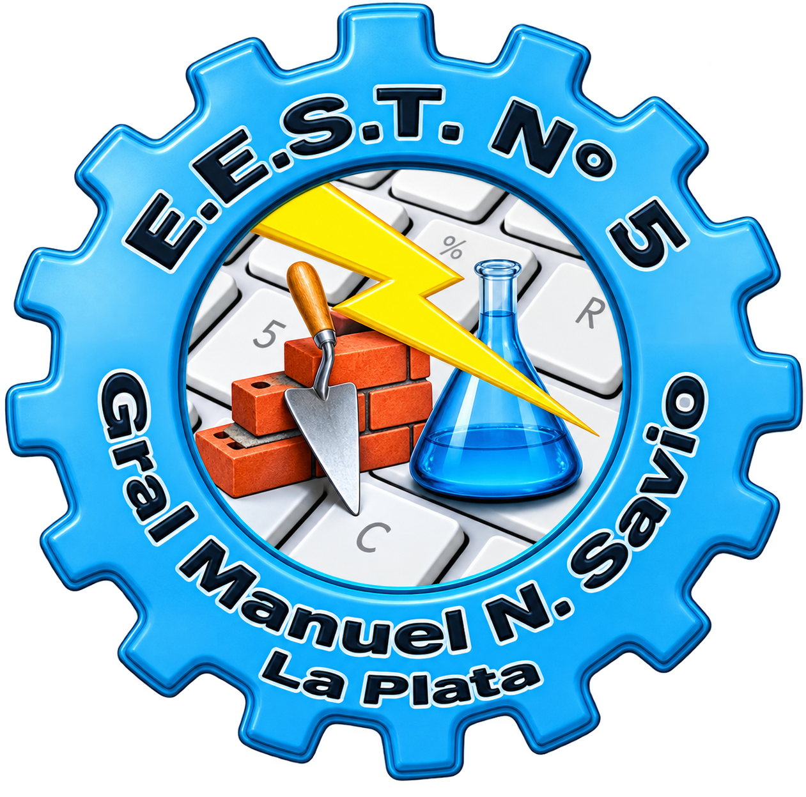

Química
Estructura atómica, uniones químicas, estequiometría y soluciones.

Formación técnica de nivel medio en el sector químico: análisis de laboratorio, control de calidad y procesos industriales, con una fuerte práctica en laboratorio.
El Técnico Químico está capacitado para evaluar y planificar la resolución de análisis, gestionar el funcionamiento de su ámbito de trabajo, realizar ensayos e interpretar sus resultados, supervisar que los procedimientos cumplan normas de calidad, seguridad y manejo adecuado de residuos, y operar procesos químicos, físicos, fisicoquímicos y microbiológicos.
Gran parte de la formación se desarrolla en los laboratorios de la escuela (Química, Procesos Industriales, Técnicas Analíticas, Análisis Microbiológico e Industrias), donde los estudiantes realizan ensayos, mediciones y análisis siguiendo protocolos de trabajo, normas de bioseguridad e higiene, y buenas prácticas de laboratorio.
El plan combina materias científico-tecnológicas (Química, Física, Matemática, Biología Celular) con formación técnica específica en laboratorio, desde 4.º hasta 7.º año, cuando se cursan las Prácticas Profesionalizantes del Sector Químico (216 horas anuales).
Estructura atómica, uniones químicas, estequiometría y soluciones.
Energía, calor, electricidad y magnetismo aplicados a procesos químicos.
Operaciones básicas de los procesos industriales y propiedades de los materiales.
Organización y funcionamiento de la célula como base de los procesos biológicos.
Práctica de técnicas básicas de laboratorio y de análisis químicos.
Mediciones y ensayos físicos con instrumental de laboratorio.
Compuestos del carbono, grupos funcionales y reacciones orgánicas.
Reacciones inorgánicas, equilibrio y propiedades de los elementos.
Procesos químicos industriales y sistemas de control de variables.
Simulación y práctica de procesos químicos a escala de laboratorio.
Métodos analíticos cualitativos y cuantitativos.
Síntesis y caracterización de compuestos orgánicos.
Biomoléculas y su relación con la química orgánica.
Procesos y productos de la industria química.
Análisis de muestras y control de calidad de productos.
Derechos y obligaciones laborales, remuneraciones y aportes.
Ensayos sobre compuestos orgánicos y muestras biológicas.
Teorías del emprendedorismo, finanzas, marketing y planificación de emprendimientos.
Organización de planta, gestión de la producción y control de calidad.
Cultivo, identificación y control de microorganismos.
Ensayos y procesos en planta a escala de laboratorio.
Consolidar e integrar las capacidades del perfil en situaciones de trabajo reales. 216 h anuales.
El área ocupacional del Técnico Químico es amplia: empresas industriales, contratistas de servicios industriales, instituciones de investigación y desarrollo públicas o privadas, laboratorios y plantas de universidades, laboratorios de análisis clínicos, e instituciones públicas de control bromatológico, además de la posibilidad de generar su propio emprendimiento.
Las Prácticas Profesionalizantes del Sector Químico se cursan en 7.º año con una carga de 216 horas anuales. Integran las capacidades del perfil en situaciones de trabajo reales, dentro de la escuela o fuera de ella.
Conocé el proceso de pre-inscripción y empezá el camino técnico en la E.E.S.T. N.º 5.